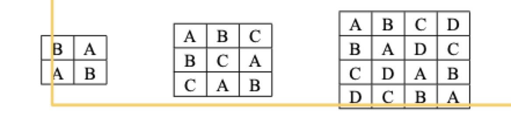

Chapter 7 The Latin Square Design (LSD)
Sometimes you will have two sources of variation in space or time, or perhaps space and time. Perhaps there is a gradient of elevation up and down a hillside, and a gradient of sun incidence orthoganol (90˚) to that. There are innumerable examples one could imagine. The principle is that in an LSD, the treatments are allocated randomly in ‘rows’ and ‘columns’.

A Latin Square blocks on both rows and columns simultaneously.
Agricolae has a built in function for helping generate these designs, obvio. Again, new section or new script…..
# makes sure random allocation happens the same for everyone.
set.seed(123)
#
treat<- c("Cont","Herb1","Herb2","Placebo")
# design.lsd
design <- design.lsd(treat,serie = 0)$book
design## plots row col treat
## 1 11 1 1 Cont
## 2 12 1 2 Herb1
## 3 13 1 3 Herb2
## 4 14 1 4 Placebo
## 5 21 2 1 Herb1
## 6 22 2 2 Herb2
## 7 23 2 3 Placebo
## 8 24 2 4 Cont
## 9 31 3 1 Placebo
## 10 32 3 2 Cont
## 11 33 3 3 Herb1
## 12 34 3 4 Herb2
## 13 41 4 1 Herb2
## 14 42 4 2 Placebo
## 15 43 4 3 Cont
## 16 44 4 4 Herb1Make sure you understand that the double-blocking has happened! See the figure above with 4 letters. Can you create on a piece of paper the matrix from this design you’ve made in R?
Now, lets generate some data, as before.
# for fun, set again.
set.seed(123)
# make sure you understand why this is the total unites
# think about the square matrix above....
Total.units <- length(treat) * length(treat)
# generate some error
error <- rnorm(Total.units, mean = 0, sd = 1)
# make sure you think about where we generated variation in the blocking!
design$obs <- 20 +
# the treatment effects
(design$treat=="Herb1") * 10 +
(design$treat == "Herb2") * 9 +
# the latin square blocking effects
(design$row==1) * 10 -
(design$col==4) * 10 +
# the error
error
# look at it.... there are three explanatory variables...
# treat, row-block, column-block!
head(design)## plots row col treat obs
## 1 11 1 1 Cont 30.18707
## 2 12 1 2 Herb1 41.99603
## 3 13 1 3 Herb2 41.29937
## 4 14 1 4 Placebo 21.12746
## 5 21 2 1 Herb1 31.08111
## 6 22 2 2 Herb2 29.569177.0.1 Fitting the model
Let’s fit the naive and full models as before
naive_lsd <- lm(obs ~ treat, data = design)
full_lsd <- lm(obs ~ row + col + treat, data = design)
anova(naive_lsd)## Analysis of Variance Table
##
## Response: obs
## Df Sum Sq Mean Sq F value Pr(>F)
## treat 3 398.31 132.771 2.2902 0.1303
## Residuals 12 695.68 57.973anova(full_lsd)## Analysis of Variance Table
##
## Response: obs
## Df Sum Sq Mean Sq F value Pr(>F)
## row 3 402.44 134.145 139.002 6.209e-06 ***
## col 3 287.45 95.818 99.287 1.672e-05 ***
## treat 3 398.31 132.771 137.578 6.401e-06 ***
## Residuals 6 5.79 0.965
## ---
## Signif. codes: 0 '***' 0.001 '**' 0.01 '*' 0.05 '.' 0.1 ' ' 1Very quickly we can see, again, that without blocking, we have a risk of not detecting differences among treatments!
Take a look above at the design$obs object. Can you review the summary output and validate that the model is estimating what we simulated? You should see the treatment effects (+10, +9) and you should also be able to see the block effects…
summary(full_lsd)##
## Call:
## lm(formula = obs ~ row + col + treat, data = design)
##
## Residuals:
## Min 1Q Median 3Q Max
## -0.99849 -0.41205 0.00493 0.37463 1.24126
##
## Coefficients:
## Estimate Std. Error t value Pr(>|t|)
## (Intercept) 30.7965 0.7766 39.654 1.72e-08 ***
## row2 -11.2092 0.6946 -16.137 3.60e-06 ***
## row3 -12.1132 0.6946 -17.438 2.28e-06 ***
## row4 -11.3415 0.6946 -16.327 3.36e-06 ***
## col2 1.2130 0.6946 1.746 0.131
## col3 0.4538 0.6946 0.653 0.538
## col4 -9.1817 0.6946 -13.218 1.16e-05 ***
## treatHerb1 10.2526 0.6946 14.759 6.08e-06 ***
## treatHerb2 9.1602 0.6946 13.187 1.17e-05 ***
## treatPlacebo -0.4739 0.6946 -0.682 0.521
## ---
## Signif. codes: 0 '***' 0.001 '**' 0.01 '*' 0.05 '.' 0.1 ' ' 1
##
## Residual standard error: 0.9824 on 6 degrees of freedom
## Multiple R-squared: 0.9947, Adjusted R-squared: 0.9868
## F-statistic: 125.3 on 9 and 6 DF, p-value: 3.921e-06Finally, we can use contrasts to test a few of our key hypotheses. Make some notes on what these things mean!
#first the set of comparisons with control. This is the same thing that
# the summary table does!
contrast1 <- rbind(
"C v H1" = c(-1,1,0,0),
"C v H2" = c(-1,0,1,0),
"C v P" = c(-1,0,0,1))
fit.contrast(full_lsd, "treat", contrast1)## Estimate Std. Error t value Pr(>|t|)
## treatC v H1 10.2525618 0.6946426 14.7594771 6.079845e-06
## treatC v H2 9.1601564 0.6946426 13.1868620 1.174267e-05
## treatC v P -0.4738879 0.6946426 -0.6822038 5.205624e-01
## attr(,"class")
## [1] "fit_contrast"# now the H1 vs H2
contrast2 <- rbind("H1 v H2" = c(0,-1,1,0))
fit.contrast(full_lsd, "treat", contrast2)## Estimate Std. Error t value Pr(>|t|)
## treatH1 v H2 -1.092405 0.6946426 -1.572615 0.1668691
## attr(,"class")
## [1] "fit_contrast"